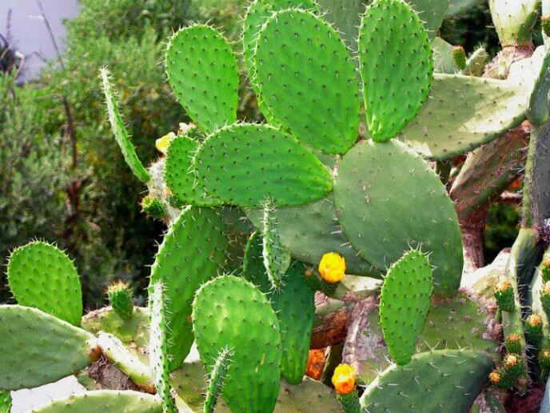

Nopal

Pertenece a la familia de los cactus
Es un símbolo nacional durante siglos, ya que en él se postra el águila devorando una serpiente del escudo de México
hay ocho especies endémicas
ir al menu principal